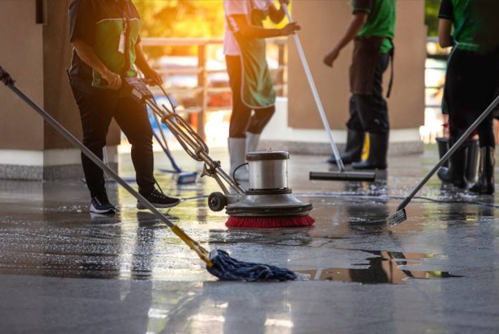

Commercial
Commercial & Office Cleaning
Daily, weekly or holiday-period cleaning for workplaces and public sites in Darwin, Katherine and Alice Springs.
- School cleaning / holiday cleaning
- Childcare cleaning
- Government buildings
- Council facilities
- Aboriginal corporations
- Pub & hospitality cleaning
- Medical & laboratory centres
- Caravan & bus cleaning
- Body corporate cleaning